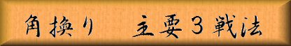

「図１」（角換りパターン１）までの手順
▲７六歩 ▽８四歩 ▲２六歩 ▽３二金 ▲２五歩 ▽８五歩
▲７七角 ▽３四歩 ▲８八銀 ▽７七角成 ▲同 銀 ▽２二銀
▲７八金 ▽３三銀
 |
|
||||
|
角換りの将棋には主として３つの戦法が有ります。 「図１」（角換りパターン１）までの手順 ▲７六歩 ▽８四歩 ▲２六歩 ▽３二金 ▲２五歩 ▽８五歩 ▲７七角 ▽３四歩 ▲８八銀 ▽７七角成 ▲同 銀 ▽２二銀 ▲７八金 ▽３三銀 | |||||
| Figure 1
|
「図１」は（角換りパターン１）の局面です。 パターンによって手順も変わってくるので、ここまでの手順も再掲しました。 「図１」から「図２」までの手順 ▲３八銀 ▽７二銀 ▲３六歩 ▽７四歩 ▲３七銀 ▽７三銀 ▲４六銀 ▽６四銀 ▲１六歩 ▽９四歩 ▲９六歩 ▽１四歩 |
|||
| Figure 2
|
▲３六歩と突き３七から４六に銀を繰り出して行く手法を”早繰り銀”と呼び、 ここから▲３五歩と突き、▽同歩なら▲同銀で、次に▲２四歩で飛車先と銀の交換を狙うと言う、棒銀に類似した攻撃法をとる戦法です。 ただ「図１」の先後共に早繰り銀にする戦型は、今はあまり指される事が有りません。 「図１」までの手順中、先手の▲１六歩と後手の▽９四歩は絶対に必要な手で、 これを突いておかないと飛車先と銀を交換して２四（８六）に飛車が出た時に、 ▽１五角（▲９五角）と王手飛車取りをくいます。 「図１」から「図３」までの手順 ▲３八銀 ▽７二銀 ▲２七銀 ▽７四歩 ▲２六銀 ▽７三銀 ▲１五銀 |
|||
| Figure 3
|
「図３」は先手が棒銀、これまで何度も登場した戦法です。 後手が「図２」の早繰り銀を目指す対抗型で、ここから激戦が展開される定跡の一局面です。 この「図３」からは”角換り棒銀”の章で解説致します。 「図１」から「図４」までの手順 ▲３八銀 ▽７二銀 ▲４六歩 ▽６四歩 ▲４七銀 ▽６三銀 ▲５八金 ▽５二金 ▲３六歩 ▽７四歩 ▲６八玉 ▽５四銀 ▲５六銀 ▽９四歩 ▲９六歩 ▽１四歩 ▲１六歩 ▽４二玉 ▲７九玉 ▽３一玉 ▲３七桂 ▽７三桂 |
|||
| Figure 4
|
「図４」が角換りの中で、最も多く指されている腰掛け銀先後同形の局面です。 以上が主として角換りで指される３戦法ですが、これらは互いにジャンケンのグー チョキ パーの関係に有り、 腰掛け銀には棒銀、棒銀には早繰り銀、早繰り銀には腰掛け銀と言う相関関係となります。 ただその形になればそれだけで有利と言う訳では無く、有力策になると言う事です。 |
|||

|
||||